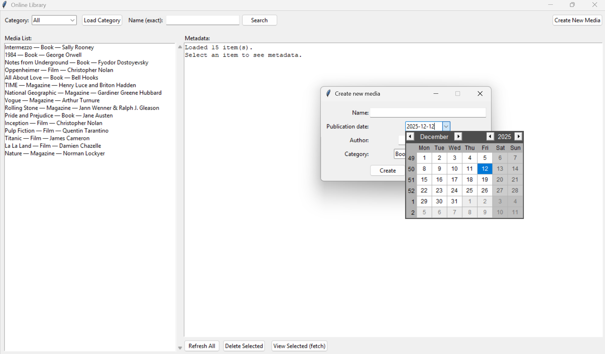

My Online Library
This project involves the design and implementation of a complete software system for an online digital library, consisting of a Flask-based backend and a Tkinter GUI. The aim of the application is to store, manage, and retrieve metadata for different types of media, specifically books, films, and magazines, while maintaining a clear separation between data handling and user interaction. The backend provides a set of RESTful endpoints (which is the standard technical name for a website address (URL) that the frontend can call to ask the backend to do something) that enable listing, searching, creating, and deleting media items, all of which are stored persistently in a JSON file. This data format ensures transparency and portability, while input validation and error handling primarily preserve data consistency. The frontend complements this by offering an intuitive interface that allows users to browse categories, perform exact-name (case sensitive) searches, inspect metadata, and create new entries through a dedicated dialog window. Communication between the client and server is handled entirely through HTTP requests, allowing both components to operate independently of one another. This makes it extremely simple to use by the user. Throughout the development process, attention was particularly given to the clarity of code structure, modular design, and user-focused interaction flows. The resulting application demonstrates a functional and maintainable solution that translates core programming concepts into a practical, interactive system.